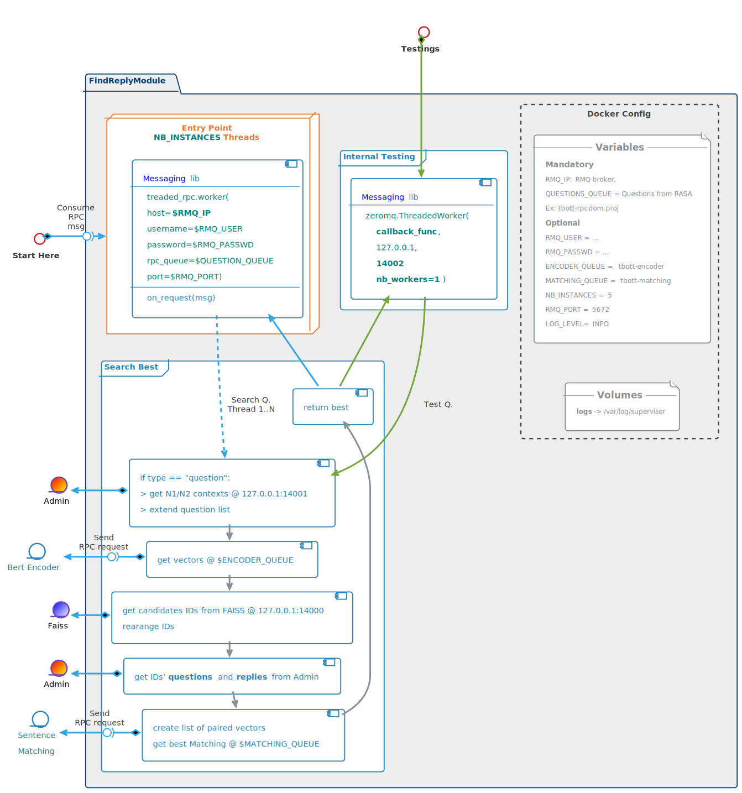
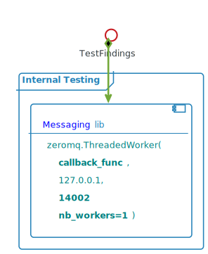

Find Reply Module
Architecture Overview

Attributes
- Aggregate content from different sources
- Most of its time spent in waiting a reply from those sources
- Must use mutlithreading to serve RPC requests from RASA to optimize performances
Docker Configuration
ENVIRONMENT VARIABLES
Mandatory
- RMQ_IP: RabbitMQ broker FQN or IP
- QUESTIONS_QUEUE: Questions from RASA (Ex: tbott-rpc_.dom.proj_)
Optional
- NB_INSTANCES: number of allocated threads
► limits the number of questions in parallel
► defines service level capacities (dimensioning rule)
► default = 5 - RMQ_USER: tbott
- RMQ_PASSWD: M0m3n773ch
- ENCODER_QUEUE: tbott-encoder (Bert encoder queue)
- MATCHING_QUEUE: tbott-matching (Sentence matching queue)
- RMQ_PORT: 5672
- LOG_LEVEL: INFO
- NB_INSTANCES: number of allocated threads
VOLUMES
- logs: mounted in /var/log/supervisor
Communications
most of the code can be picked from the previous version of Maestro
Two type of requests
To be compatible with the existing
- "question" : questions coming from RASA
- "analyse_sentence" : From Analyser
- can be implemented in a second or third stage ~ not mandatory ~
- reuse codes from the previous Maestro version
- needs to generate a list of questions with one and two words missings
- number of free threads must be set to 0, or heavily decreased, to save resources
code trails
Line _51_ of ai_worker.py:
self.worker = Worker(ip, user, passwd, channel, self.handle_message)
Line _57_ of ai_worker.py:
def handle_message(self, msg):
"""
Callback to handle messages
"""
LOGGER.debug('Received: %s', msg)
try:
request = json.loads(msg)
if request['type'] == "question":
full_answer = self.find_reply(request)
return json.dumps(full_answer)
elif request['type'] == "analyse_sentence":
full_answer = self.analyse_sentence(request['content'], request['categories'], request['reference'])
return json.dumps(full_answer)
...
Step 1: contexts
NB: only if message is a "question" (ie comes from RASA)
- get all possible categories (or contexts) from Admin.
- extend question list with all possible contexts
Step 2: vectors
Send question list to rabbitMQ $ENCODER_QUEUE using the Messaging library.
Request example:
{
"request": "encode",
"content": ["original_question", "extended_question1", "..."]
}
Reply example:
{
"encoded": [numpy.array, numpy.array, numpy.array]
}
Step 3 : candidates
Get possible candidates from FAISS module (127.0.0.1:14000)
Search request example:
{ "requests" : ["search"],
"search" : [numpy.array , numpy.array]
}
FAISS reply example:
{ "result" : numpy.array }
The FAISS module send back a matrix of size 2 x nb_questions x nb_results :
- 2 : IDs and scores (in this order)
- nb_questions: number of questions sent to FAISS
- nb_results: number of results per question (top k results)
If the question comes from RASA (ie message type = "question"), then all the questions are derivated from the original question.
Which means that the results must be consolidated into only one list of IDs.
This shouldbe done via Numpy as python's loops are quite time consuming.
Code snippet:
res = search_faiss(q_vectors)
I = res[0]
S = res[1]
NQ = I.shape[0] # Number of questions
K = I.shape[1] # Number of results per question
I_ = np.reshape(I, NQ * K) # reshape matrice into a list
S_ = np.reshape(S, NQ * K) # idem
res_ids = np.argsort(S_) # indexes of the sorted scores
#first occurence of each result
_, i = np.unique(I_[res_ids], return_index=True)
I_ = I_[i] # keep uniq ids
S_ = S_[i] # Keep uniq scores
final_idx = np.argsort(S_) # Indexes of the sorted scores
final_idx = final_idx[:K] # Keep only the K first results
final_ids = I_[final_idx]
final_scores = S_[final_idx]
return final_ids, final_scores
Step 4 : Questions to match
- Get from Admin questions and replies associated to the list of candidates IDs.
- Build a list of paired questions.
- Augmented questions must be paired only with questions from the same categories/contexts
Step 5 : Best match
- Send the list of questions pairs to rabbitMQ $MATCHING_QUEUE using the Messaging library.
- Build the final reply with the best match and other candidates
- chuncks of previous version of Maestro can be reused to speed up devs
Testing procedure
|
 |